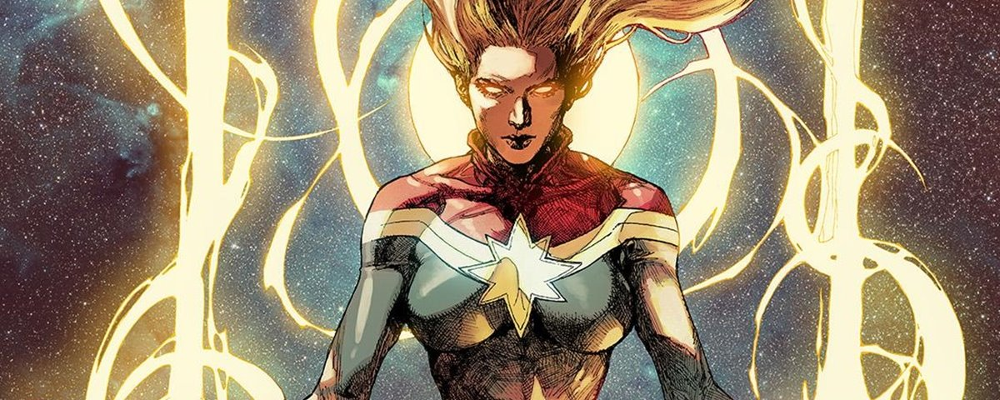

Emquanto há vida, há esperança (Eclesiastes 9:4)
Capitã Marvel
Carol Danvers (Brie Larson) é uma ex-agente da Força Aérea norte-americana, que, sem se lembrar de sua vida na Terra, é recrutada pelos Kree para fazer parte de seu exército de elite. Inimiga declarada dos Skrull, ela acaba voltando ao seu planeta de origem para impedir uma invasão dos metaformos, e assim vai acabar descobrindo a verdade sobre si, com a ajuda do agente Nick Fury (Samuel L. Jackson) e da gata Goose.
VideoClip Favorito
Série Favorita
O brilhante e imaturo detetive Jake Peralta precisa aprender a seguir as regras e trabalhar em equipe quando um capitão exigente assume o comando de seu esquadrão.
Quem é Hiago Layann?
Olá sou o Hiago e tenho 18 anos, Tenho duas irmãs e nós ainda moramos na casa dos nossos pais que é no Sítio Cruzeirinho da cidade de Icó do Estado Ceará. Sou cristão e sigo a Deus junto com minha família desde minha infância, sou fascinado em assistir filmes (principalmente os da Marvel), séries, animes, sei o básico em tocar bateria, gosto muito de cantar, treino Jiu-Jitsu (ainda sou faixa branca em 2°grau) e gosto bastante de andar em cavalos.
Estou cursando no nível superior no 3° Semestre de Análise Desenvolvimento de Sistema na Faculdade Vale do Salgado. Após terminar o nível superior, vou correr atrás de algumas metas e sonhos em que o maior seria ser um (PRF) Polícia Rodoviária Federal, e com isso em mãos, estaria realizando outro sonho que é honra minha família e principalmente meus pais devolvendo em dobro tudo o que eles fizeram por mim.